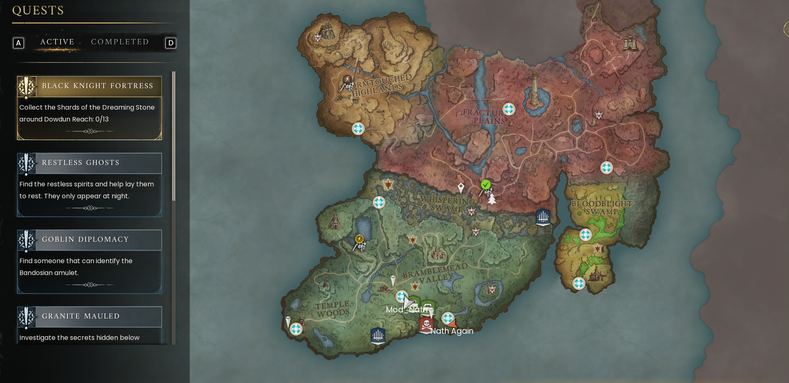
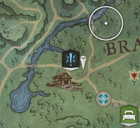
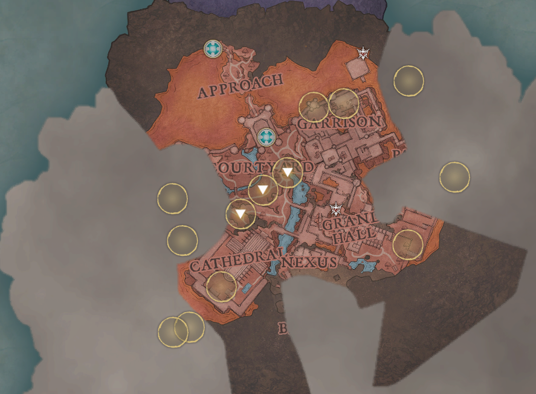

Quest guide
Understand the journal, follow objectives and keep the group’s story together.
On this page
Controls for this walkthrough
Interact E · Inventory Tab · Map M / J · Build B
Full controls and menu navigation · * marks a controller-equivalent mapping; the in-game prompt takes priority.
How to follow a quest
- Speak to the relevant character or interact with the quest object. Read the dialogue before closing it.
- Open your map or quest list and select the objective you are actually working on.
- Read the action word: speak, collect, craft, visit and defeat are different tasks.
- Use its marker as a destination, then inspect the area on arrival. The marker may not sit directly on the exact object.
- After completing the task, recheck the log. Some stages need a return conversation or an item in your inventory.


Learn the markers




Your early route
| Stage | Purpose | What to do next |
|---|---|---|
| First Steps / tutorial introduction | Meet the Wise Old Man and choose your start. | Learn the essentials or arrange help reaching camp. |
| Getting Started | Doric’s survival and crafting lesson. | Use your own objective list to finish the requests. |
| Ratcatcher | Vannaka’s introductory combat and cooking lesson. | Practise safe attacks and preparing supplies. |
| Rune Mysteries | Zanik’s introduction to runes and sorcery. | Try your spell and understand its rune cost. |
| Dragon Slayer | A longer objective to work towards. | Coordinate with the group; it is not a fight to rush on arrival. |
Beyond your first region
Later questing takes you through more demanding parts of Ashenfall. Withering Heights is associated with Fellhollow and Imaru. The 1.0 release adds Regicide in the Scorned Wilderness. Treat these as long-term milestones, not errands to attempt with starter tools.
Story spoilers: the late-game destination
Kuldra is the culminating boss of the original saga. Reaching her is a team preparation project: gear, supplies, quest readiness and knowledge of the encounter all matter.
If a quest appears stuck
- Read the exact stage again, including item quantities.
- Check whether the required item is in your own inventory rather than a chest.
- Return to the quest giver and look for a new dialogue option.
- Compare your progress with another player; being in the same world does not prove your personal objective is complete.
- Look up the named quest using the wiki links below. If the stage still fails, capture the objective and error for the host.
Walkthrough library
These guides reveal quest objectives and solutions. Open only the chapter you are ready to play.
Further reading
For exact requirements, detailed walkthroughs and more depth, visit the topic pages below.
Wiki adaptations and data: RuneScape: Dragonwilds Wiki contributors, CC BY-NC-SA 3.0. See credits for source dates.